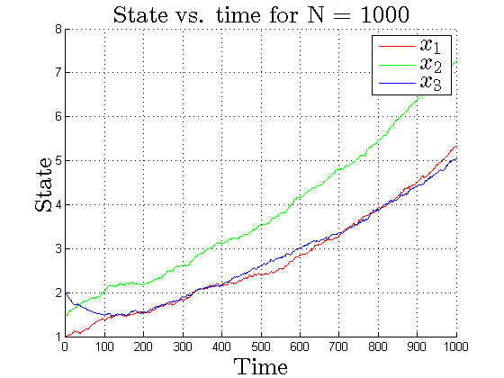
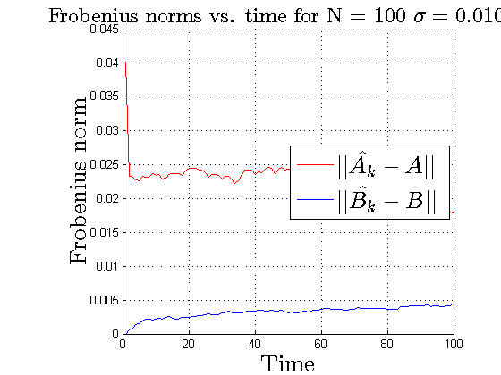
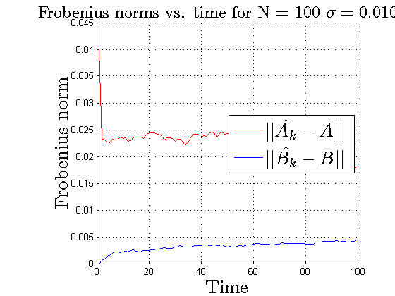
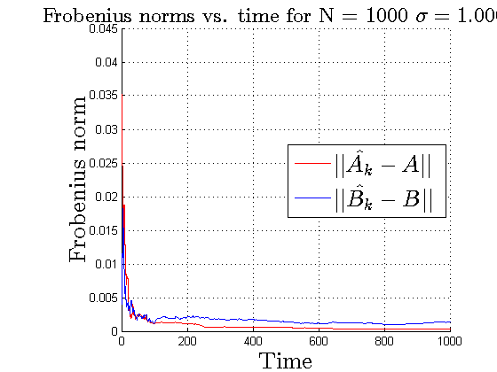
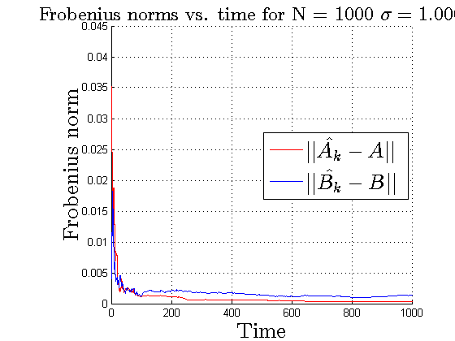

Contents
AA 203 HW 8 Question 3
Somrita Banerjee
clc clear all close all rng('default') % For reproducibility A0 = [0.99 0 0; 0 0.99 0; 0 0 0.99]; B0 = [1 0 0; 0 1 0; 0 0 1]; A = [1.01 0.01 0; 0.01 1.01 0.01; 0 0.01 1.01]; B = B0; noiseStdDev = 0.01; Q = eye(3); R = 1000*eye(3); xInit = [1.0; 1.5; 2.0];
Part a - Plain LQR
[K,S,e] = dlqr(A0,B0,Q,R); N_vals = [100 1000 10000]; for N = N_vals x = zeros(3, N); u = zeros(3, N); cost = 0; for i = 1:N if i == 1 x(:,i) = xInit; else noise = normrnd(0, noiseStdDev, [3,1]); x(:,i) = A*x(:,i-1) + B*u(:,i-1) + noise; end u(:,i) = -K*x(:,i); cost = cost + x(:,i)'*Q*x(:,i) + u(:,i)'*R*u(:,i); end fprintf('Cost for N = %d is %.2f \n',N, cost) figure hold on plot([1:N], x(1,:),'r') plot([1:N], x(2,:),'g') plot([1:N], x(3,:),'b') titl = sprintf('State vs. time for N = %d',N); legend({'$$x_1$$','$$x_2$$','$$x_3$$'},'Interpreter','latex','FontSize',20); xlabel('Time','Interpreter','latex','FontSize',20); ylabel('State','Interpreter','latex','FontSize',20); title(titl,'Interpreter','latex','FontSize',20); grid on figure hold on plot([1:N], u(1,:),'r') plot([1:N], u(2,:),'g') plot([1:N], u(3,:),'b') titl = sprintf('Control vs. time for N = %d',N); legend({'$$u_1$$','$$u_2$$','$$u_3$$'},'Interpreter','latex','FontSize',20); xlabel('Time','Interpreter','latex','FontSize',20); ylabel('Control','Interpreter','latex','FontSize',20); title(titl,'Interpreter','latex','FontSize',20); grid on end
Cost for N = 100 is 1216.89 Cost for N = 1000 is 53255.71 Cost for N = 10000 is 2418241054959084.00
Part b- Certainty equivalent adaptive LQR controller
N_vals = [100 1000 10000]; for N = N_vals x = zeros(3, N); u = zeros(3, N); A_vals = zeros(3,3,N); B_vals = zeros(3,3,N); L_vals = zeros(6,6,N); Q_vals = zeros(6,3,N); A_fro_vals = zeros(1,N); B_fro_vals = zeros(1,N); cost = 0; for i = 1:N if i == 1 x(:,i) = xInit; A_vals(:,:,i) = A0; B_vals(:,:,i) = B0; L_vals(:,:,i) = eye(6); Q_vals(:,:,i) = [A0' B0']'; else noise = normrnd(0, noiseStdDev, [3,1]); xk = x(:,i-1); uk = u(:,i-1); Ak = A_vals(:,:,i-1); Bk = B_vals(:,:,i-1); x(:,i) = A*xk + B*uk + noise; % Update L, Q, A, B vals for ith xbar = [xk' uk']'; Lk = L_vals(:,:,i-1); Qk = Q_vals(:,:,i-1); Lknext = Lk - (1/(1+xbar'*Lk*xbar))*(Lk*xbar)*(Lk*xbar)'; Qknext = xbar*x(:,i)' + Qk; LQnext = (Lknext*Qknext)'; L_vals(:,:,i) = Lknext; Q_vals(:,:,i) = Qknext; A_vals(:,:,i) = LQnext(:,1:3); B_vals(:,:,i) = LQnext(:,4:6); end [K,~,~] = dlqr(A_vals(:,:,i),B_vals(:,:,i),Q,R); u(:,i) = -K*x(:,i); cost = cost + x(:,i)'*Q*x(:,i) + u(:,i)'*R*u(:,i); % Store frobenius norms A_fro_vals(i) = norm(A_vals(:,:,i)-A,'fro'); B_fro_vals(i) = norm(B_vals(:,:,i)-B,'fro'); end fprintf('Cost for N = %d is %.2f \n',N, cost) figure hold on plot([1:N], x(1,:),'r') plot([1:N], x(2,:),'g') plot([1:N], x(3,:),'b') titl = sprintf('State vs. time for N = %d',N); legend({'$$x_1$$','$$x_2$$','$$x_3$$'},'Interpreter','latex','FontSize',20,'Location','east'); xlabel('Time','Interpreter','latex','FontSize',20); ylabel('State','Interpreter','latex','FontSize',20); title(titl,'Interpreter','latex','FontSize',20); grid on figure hold on plot([1:N], u(1,:),'r') plot([1:N], u(2,:),'g') plot([1:N], u(3,:),'b') titl = sprintf('Control vs. time for N = %d',N); legend({'$$u_1$$','$$u_2$$','$$u_3$$'},'Interpreter','latex','FontSize',20,'Location','east'); xlabel('Time','Interpreter','latex','FontSize',20); ylabel('Control','Interpreter','latex','FontSize',20); title(titl,'Interpreter','latex','FontSize',20); grid on figure hold on plot([1:N],A_fro_vals,'r') plot([1:N],B_fro_vals,'b') titl = sprintf('Frobenius norms vs. time for N = %d',N); legend({'$$||\hat{A_k}-A||$$','$$||\hat{B_k}-B||$$'},'Interpreter','latex','FontSize',20,'Location','east'); xlabel('Time','Interpreter','latex','FontSize',20); ylabel('Frobenius norm','Interpreter','latex','FontSize',20); title(titl,'Interpreter','latex','FontSize',18); grid on end
Cost for N = 100 is 478.99 Cost for N = 1000 is 499.20 Cost for N = 10000 is 601.38
Part c- adaptive LQR controller with white noise
N_vals = [100 1000 10000]; white_noise_stdev_vals = [0.00001 0.001 0.01 1]; for white_noise_stdev = white_noise_stdev_vals for N = N_vals x = zeros(3, N); u = zeros(3, N); A_vals = zeros(3,3,N); B_vals = zeros(3,3,N); L_vals = zeros(6,6,N); Q_vals = zeros(6,3,N); A_fro_vals = zeros(1,N); B_fro_vals = zeros(1,N); cost = 0; for i = 1:N if i == 1 x(:,i) = xInit; A_vals(:,:,i) = A0; B_vals(:,:,i) = B0; L_vals(:,:,i) = eye(6); Q_vals(:,:,i) = [A0' B0']'; else noise = normrnd(0, noiseStdDev, [3,1]); xk = x(:,i-1); uk = u(:,i-1); Ak = A_vals(:,:,i-1); Bk = B_vals(:,:,i-1); x(:,i) = A*xk + B*uk + noise; % Update L, Q, A, B vals for ith xbar = [xk' uk']'; Lk = L_vals(:,:,i-1); Qk = Q_vals(:,:,i-1); Lknext = Lk - (1/(1+xbar'*Lk*xbar))*(Lk*xbar)*(Lk*xbar)'; Qknext = xbar*x(:,i)' + Qk; LQnext = (Lknext*Qknext)'; L_vals(:,:,i) = Lknext; Q_vals(:,:,i) = Qknext; A_vals(:,:,i) = LQnext(:,1:3); B_vals(:,:,i) = LQnext(:,4:6); end white_noise = normrnd(0, white_noise_stdev, [3,1]); [K,~,~] = dlqr(A_vals(:,:,i),B_vals(:,:,i),Q,R); u(:,i) = -K*x(:,i) + white_noise; cost = cost + x(:,i)'*Q*x(:,i) + u(:,i)'*R*u(:,i); % Store frobenius norms A_fro_vals(i) = norm(A_vals(:,:,i)-A,'fro'); B_fro_vals(i) = norm(B_vals(:,:,i)-B,'fro'); end fprintf('Cost for N = %d, white noise std dev = %.5f is %.2f \n',N, white_noise_stdev, cost) figure hold on plot([1:N], x(1,:),'r') plot([1:N], x(2,:),'g') plot([1:N], x(3,:),'b') titl = sprintf('State vs. time for N = %d $\\sigma = %.5f$',N, white_noise_stdev); legend({'$$x_1$$','$$x_2$$','$$x_3$$'},'Interpreter','latex','FontSize',20,'Location','east'); xlabel('Time','Interpreter','latex','FontSize',20); ylabel('State','Interpreter','latex','FontSize',20); title(titl,'Interpreter','latex','FontSize',20); grid on figure hold on plot([1:N], u(1,:),'r') plot([1:N], u(2,:),'g') plot([1:N], u(3,:),'b') titl = sprintf('Control vs. time for N = %d $\\sigma = %.5f$',N, white_noise_stdev); legend({'$$u_1$$','$$u_2$$','$$u_3$$'},'Interpreter','latex','FontSize',20,'Location','east'); xlabel('Time','Interpreter','latex','FontSize',20); ylabel('Control','Interpreter','latex','FontSize',20); title(titl,'Interpreter','latex','FontSize',20); grid on figure hold on plot([1:N],A_fro_vals,'r') plot([1:N],B_fro_vals,'b') titl = sprintf('Frobenius norms vs. time for N = %d $\\sigma = %.5f$',N, white_noise_stdev); legend({'$$||\hat{A_k}-A||$$','$$||\hat{B_k}-B||$$'},'Interpreter','latex','FontSize',20,'Location','east'); xlabel('Time','Interpreter','latex','FontSize',20); ylabel('Frobenius norm','Interpreter','latex','FontSize',20); title(titl,'Interpreter','latex','FontSize',18); grid on end end
Cost for N = 100, white noise std dev = 0.00001 is 492.18 Cost for N = 1000, white noise std dev = 0.00001 is 482.81 Cost for N = 10000, white noise std dev = 0.00001 is 635.98 Cost for N = 100, white noise std dev = 0.00100 is 471.72 Cost for N = 1000, white noise std dev = 0.00100 is 495.86 Cost for N = 10000, white noise std dev = 0.00100 is 620.78 Cost for N = 100, white noise std dev = 0.01000 is 509.27 Cost for N = 1000, white noise std dev = 0.01000 is 777.46 Cost for N = 10000, white noise std dev = 0.01000 is 3776.37 Cost for N = 100, white noise std dev = 1.00000 is 310598.40 Cost for N = 1000, white noise std dev = 1.00000 is 3097063.33 Cost for N = 10000, white noise std dev = 1.00000 is 31337434.89
 
 
 
